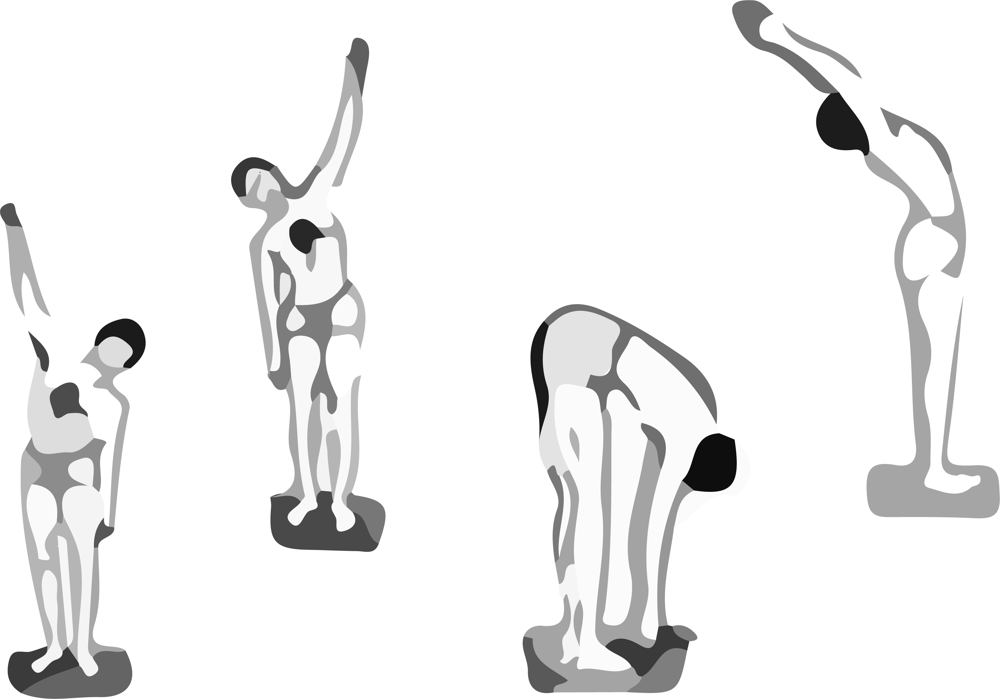

手碰腳式、駱駝式、蝗蟲式
手碰腳式作法:
1.立姿站好，兩手臂置於身體兩側
2.慢慢吸氣，同時慢慢地舉起雙臂，手掌張開，手指伸直。吸滿氣，兩手心在天空合掌
3.緩慢吐氣並將上身向左彎，同時左臂向下靠，氣吐盡時，左手心碰到左腿，右手貼向右耳，維持此一姿勢並止息八秒鐘
4.緩慢吸氣並將上身回正，同時左臂回復朝上。當上身回正時，再向右方重複上述動作
5.身體回正後，身體向前彎並吐氣，用手抓住兩腳拇趾，維持此一姿勢止息八秒
6.然後吸氣抬起上身，雙手向後伸，當無法再向後彎時就停止，並閉息八秒
7.然後吐氣再向前彎下，雙手一觸到腳拇趾就吸氣抬起上身及手臂
8.緩慢吐氣，兩手臂往身體右側慢慢放下。這樣算一次，共練習八次。練習時注意腰部以下不可彎曲。
駱駝式作法:仰臥，將雙腳抬起與地面呈三十度傾斜，同時兩手伸直靠在身體兩側。時間半分鐘，起練習四次。
蝗蟲式作法:俯臥，手臂向後伸直，手掌向上，將腰與腿抬，同時雙手握拳。時間半分鐘，起練習四次。